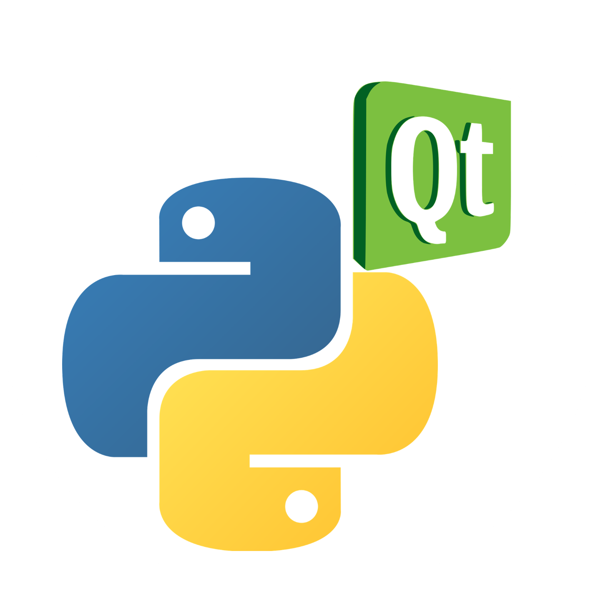
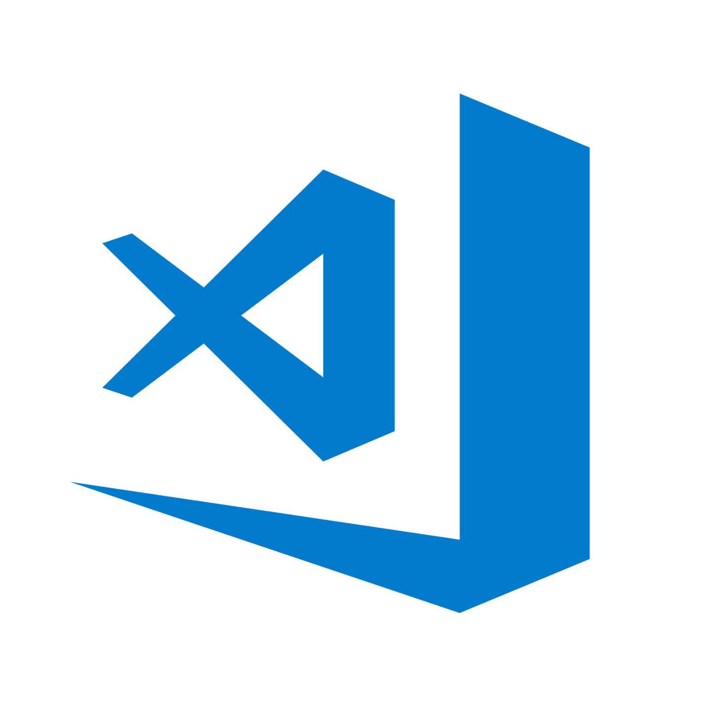

김예찬의 신상정보
김예찬이라는 객체의 속성은 다음과 같다.
- 별칭 : 찬(Chan)
- 영문명 : Yechan Kim
- 소속학과 : 제주대학교 사범대학 컴퓨터교육과
- Gender : 중성(Male 70% + Female 30%)
- 자주 사용하는 메일 주소 : think.computer@jejunu.ac.kr
- 성향 : 한 번 꽂힌 것엔 불필요할 정도의 완벽주의 경향이 있다.
- 취미 : 강의하기, IT기사 보기, 코드 고치기, 사회의 모순 밀고하기, 무언가의 오류를 찾아 건의하기
그렇다면 김예찬이 지닌 매력적인 메소드는?
김예찬의 메소드(Method)
내가 가진 핵심 메소드는 다음과 같다!
반응형 웹 같은 유연성을 지닌 김예찬의 민주정신()
김예찬은 자기주장만 내세우지 않습니다. 저는 다른 사람과 융화되어 그들의 의견을 경청합니다. 그들의 의견을 무조건 수용하거나 비판하지 않습니다. 좋은 점을 제시하고, 새로운 피드백을 덧붙입니다. 이러한 민주주의적 태도가 새로운 참신함을 만드는 법입니다.
연필만 잡으면 놓지 않는 김예찬의 공부정신()
김예찬의 학구열은 그 누구도 막을 수 없습니다. 저는 평소 근면/성실하게 전공을 물고 늘어지며 학습하는 경향이 있습니다. 이러한 학업적인 성실함을 인정받아 각종 교내외 장학금은 물론, 각종 시간강사/연구조교로 추천받아 근무한 적이 있습니다.
"고래를 춤추게 하는 건?"
김예찬의 칭찬정신()
사람을 움직이는 것은 욕이 아니라 사랑의 칭찬입니다. 저는 사람에게 함부로 말을 하지 않기 위해 노력합니다. 저 역시 부족한 사람이기 때문입니다. 저는 작은 일이라도 누군가의 성과를 칭찬합니다. 그것이 개인의 활력으로, 더 나아가 팀워크로 이어지기 때문입니다.
"궁금한 건 참지 않아!"
김예찬의 호기심정신()
모르는 것보다 더 어리석은 것은 아는 척하는 것입니다. 저는 수업 시간에 가만히 앉아 있는 대신 궁금하면 질문하는 학생이었습니다. 다만 사람의존적인 학습법은 사람이 없으면 무용지물이기 마련입니다. 따라서 요즘 저는 책/인터넷(StackOverFlow 등) 의존적인 학습법을 마련하여 끊임없이 새 기술을 연마할 준비를 마쳤습니다.
김예찬이 카카오 트랙에 발을 들인 이유는?
내가 카카오트랙 에 지원한 이유는?
사실 웹 개발자가 제 꿈은 아닙니다. 저는 교육자가 되고 싶습니다. 만약, 웹을 비롯한 개발 전반을 익힌다면 제가 가르치게 될 학생들이 '개발자'라는 꿈을 이룰 때 더 큰 도움을 줄 수 있는 교육자가 될 수 있다고 생각하였습니다. 특히 오픈소스 개발의 강력함과 그것이 주는 교육적, 사회적인 가치를 아는 좋은 예비 개발자 학생을 양성하기 위해서는 제가 먼저 그런 사람이 되어야 할 것이 틀림없습니다. 이 모든 상황이 제가 카카오 트랙을 지원한 이유입니다.
그래서 지금까지 어떤 노력을 했지?
Portfolio
김예찬의 피, 땀, 눈물


김예찬이 사랑한, 그래서 fork한 Git Project 소개
If you want to go fast, go alone. If you want to go far, go together - ManFriday.
|  | PyQT5 프로젝트 | |
| PyQT는 Python 기반 GUI 애플리케이션 제작을 위해 개발된 라이브러리입니다. 해외에서는 비교적 유명하지만, 국내에는 아직 많이 보급되지 않았습니다. 제가 이것을 공부하여 직접 보급할 수 있는 능력을 갖추고 싶습니다. 제가 관심을 두는 Git Project 중 하나입니다. 좌측 이미지를 클릭하여 제가 fork한 사이트로 이동해보시기 바랍니다. | ||
|  | Visual Studio Code 프로젝트 | |
| 제가 이 사이트를 제작할 때 사용한 IDE가 바로 Visual Studio Code입니다. Visual Studio Code는 경량의 빠른, 그러면서 편리함을 동시에 제공하기 위해 노력하는 IDE입니다. Microsoft의 이 툴을 접한 뒤로 Microsoft를 더욱 높이 평가할 정도이니 그 놀라움은 하늘을 찌릅니다. 어떤 IDE를 사용할지 망설인다면 주저 없이 Visual Studio Code를 추천합니다. GitHub와 연동도 잘 됩니다. 좌측 이미지를 클릭하여 제가 fork한 사이트로 이동해보시기 바랍니다. | ||
아래로 내려가기